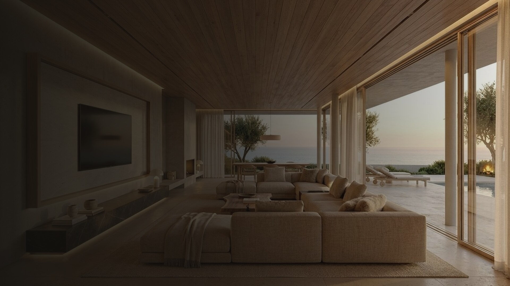
VISIO Studio · Roma
I nostri servizi, e perché un progetto vero non nasce da una planimetria data in pasto all’AI.
visiorender.it · info@visiorender.it · +39 342 668 4232
Chi siamo
Ogni annuncio diventa un’esperienza visiva che vende prima ancora della visita. Pacchetti dedicati per i portafogli immobiliari.
Render, tour e documentazione tecnica costruiti sul rilievo reale, pronti da presentare al cliente e da portare in cantiere.
La casa si vede e si percorre prima di spendere: materiali, luce e arredi scelti insieme, con un preventivo chiaro.
VISIO Studio · Roma
I servizi
Interni ed esterni, indistinguibili dal vero
Rilievo laser dello stato di fatto
Dentro il progetto, anche in cantiere
Piante, modello, impianti, computo
Dal render al mobile vero
Giardini, terrazze, piscine
Sole vero, ombre e pannelli
Luci da accendere e provare
Il progetto in un link
01 · Render fotorealistici
Ogni immagine nasce da un sopralluogo reale e da geometrie precise: materiali, luce e arredi sono quelli del progetto, non quelli di un catalogo.
Fino a 3 giri di revisione inclusi · consegna in alta risoluzione
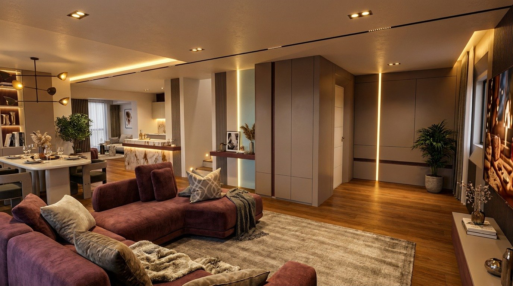
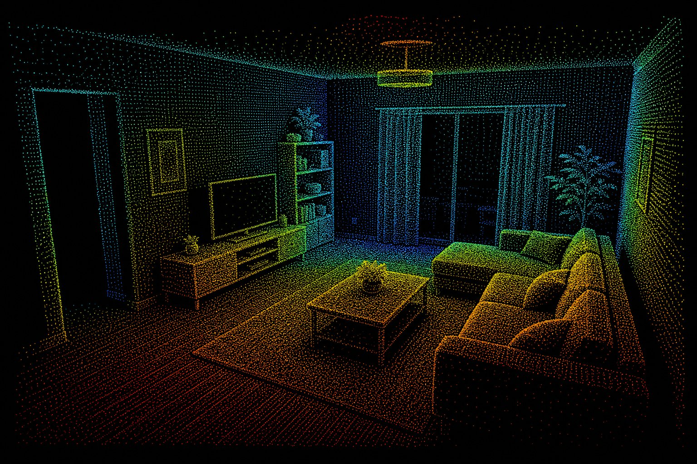
02 · Scansione LiDAR
Lo scanner ruota a 360° e misura ogni superficie che incontra.
Lo spazio diventa milioni di punti con coordinate reali, senza misure prese a mano.
Muri fuori squadra, altezze, travi e impianti esistenti entrano nel modello così come sono.
03 · Tour VR, 360° e AR
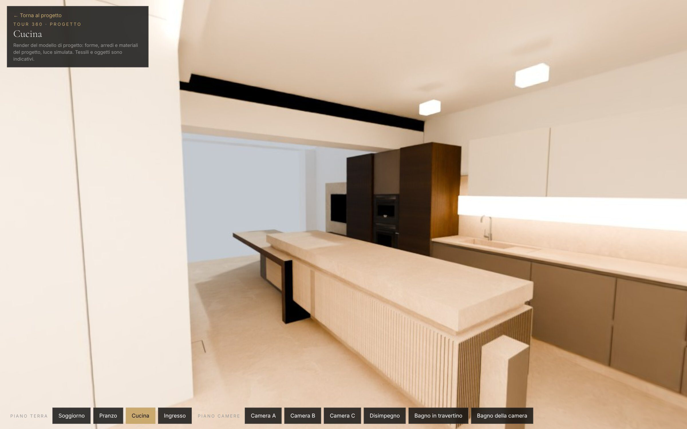
Una stanza per panorama, si passa da una all’altra con un tocco. Dal telefono o con il visore.
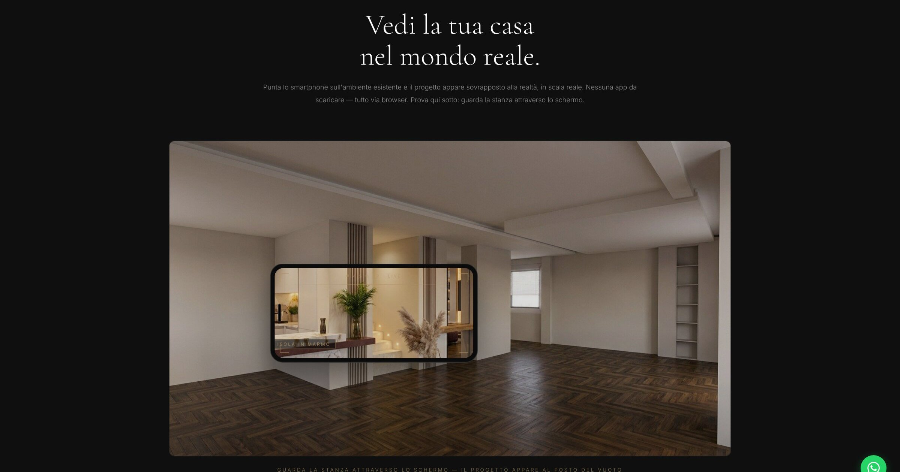
Si inquadra la stanza vuota e il progetto compare al suo posto, in scala reale. Nessuna app.
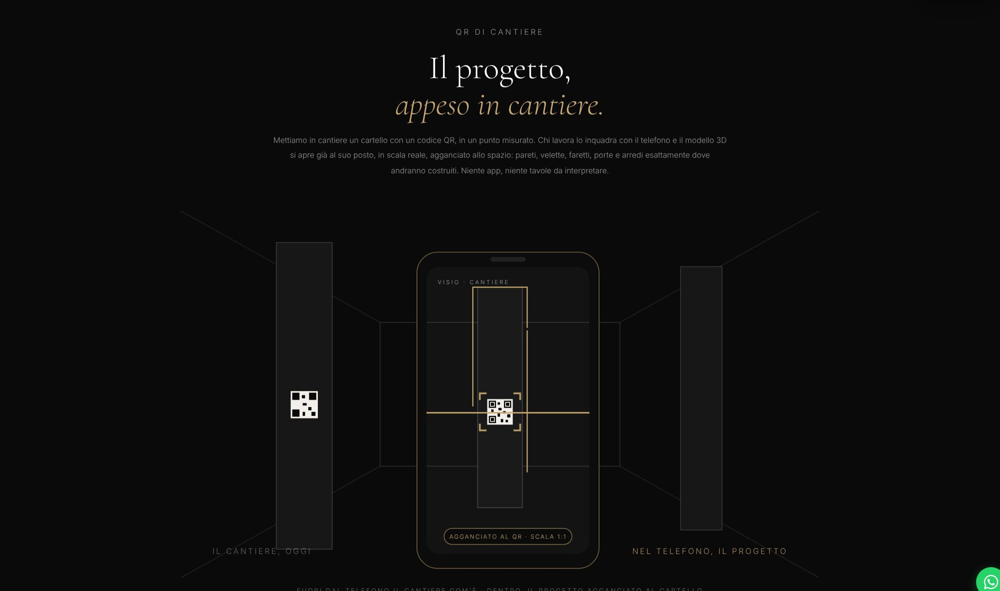
Un cartello in un punto misurato: chi lavora lo inquadra e vede pareti, faretti e arredi dove andranno. Un QR per mestiere.
Il tour a 360°, come funziona
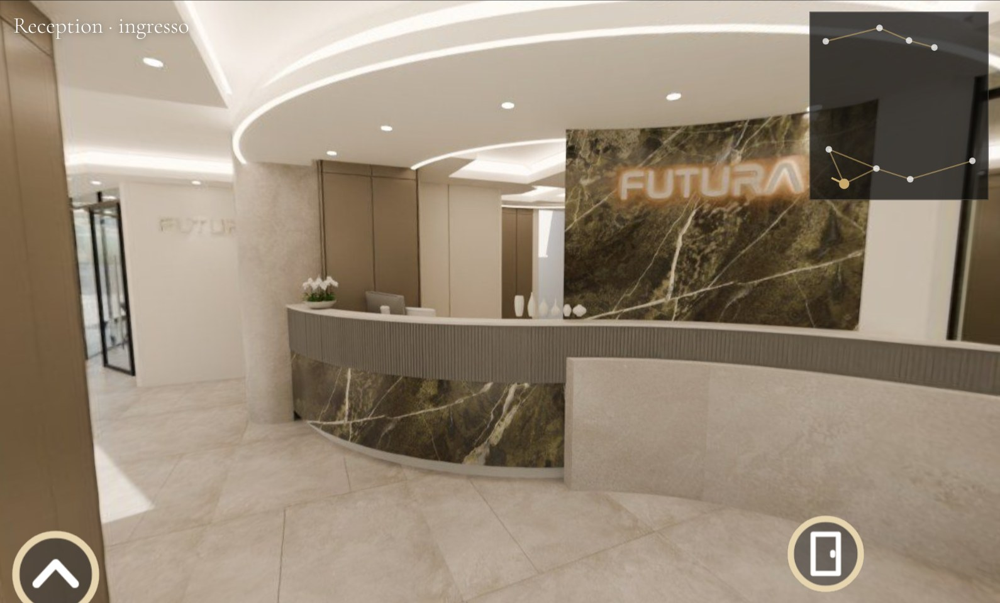
Trascini col dito o giri il telefono
Tocchi la freccia o la porta e ti sposti
Luci accese e spente, materiali da cambiare
Telefono, computer o visore
Ogni panorama esce dal modello misurato
Strumento · tour 360° interattivo
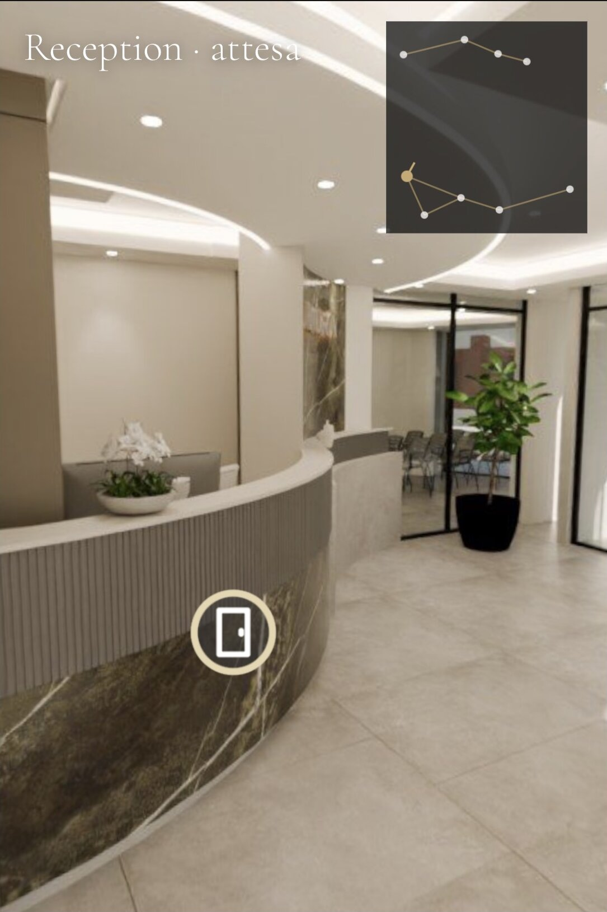
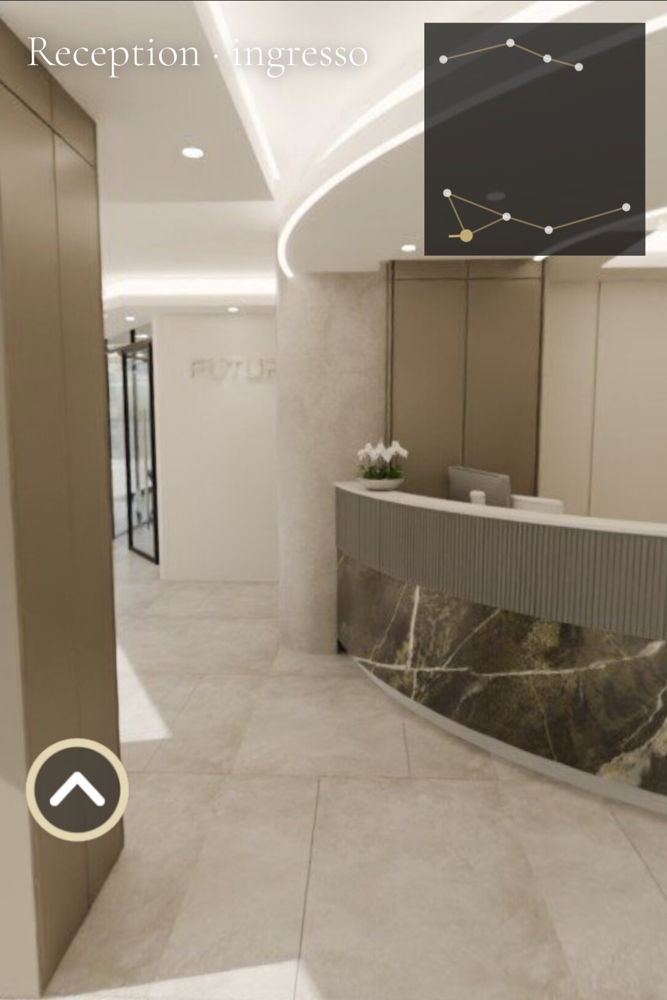
Qualità fotografica, da ogni punto
Si tocca e si entra nella stanza accanto
Si avanza nella stessa stanza
Il percorso, dove sei e dove guardi
Si cambiano materiali e atmosfera
Il tour scorre da solo, per presentarlo
Strumento · modello 3D navigabile
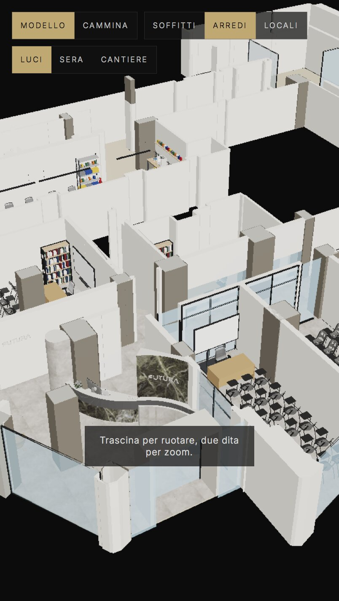
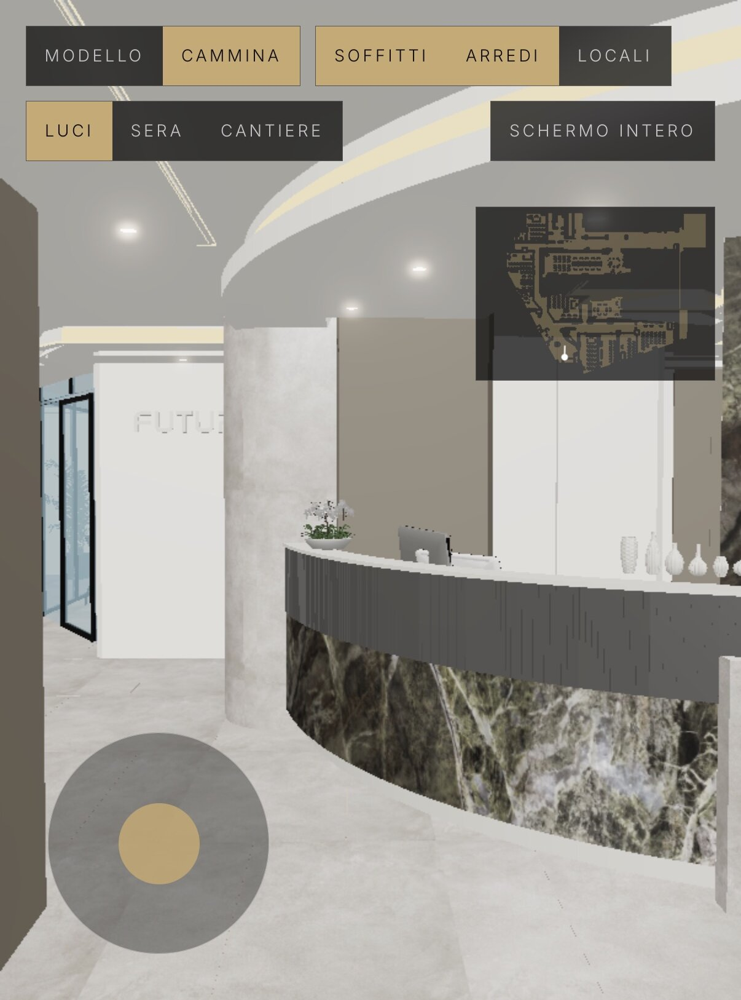
Si gira dall’alto: un dito ruota, due dita zoomano
Joystick ad altezza d’occhi, la mappa dice dove sei
Si tolgono e si rimettono per leggere gli spazi
L’impianto acceso, di giorno o di notte
Le fasi dei lavori nello stesso modello
Computer, tablet e telefono, a schermo intero
Realtà aumentata in cantiere
Fissato in un punto misurato, per esempio un pilastro a 1,20 m. Uno per zona
La fotocamera del telefono, nessuna app
Il modello si appoggia al cartello, nella posizione giusta, e ci si cammina dentro
Ogni mestiere vede solo il suo strato, con quote e posizioni
Un QR per ogni mestiere
Pareti nuove, velette e controsoffitti, con quote e altezze
Faretti, gole LED, punti luce, prese e interruttori
Vetrate, porte e infissi, con aperture e ingombri
Bancone, arredi e attrezzature, ognuno al suo posto
Chi arriva dopo vede cosa ha previsto chi è venuto prima: la traccia non finisce dove andrà il pensile.
Si controlla sul posto, in scala vera, prima di chiudere tracce, pareti e controsoffitti.
A ogni revisione si ristampa il cartello: nessuno lavora su una tavola vecchia.
Realtà virtuale con il visore
Altezze, spazi e distanze come saranno davvero
Ti guardi intorno e passi da una stanza all’altra
La luce cambia, i materiali si confrontano
Fuori dalle finestre il panorama fotografato sul posto
Si decide insieme, prima di spendere
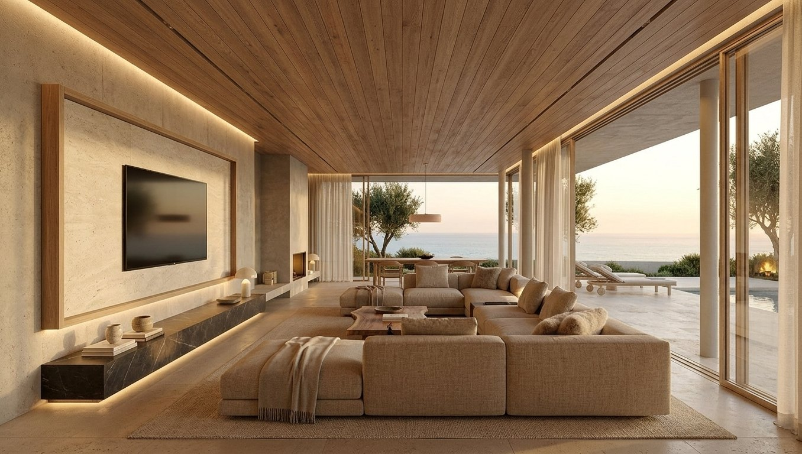
Il visore, con la vista vera
04 · Documentazione completa
05 · Arredo su misura
Ogni mobile può restare un’immagine, oppure diventare reale. Lo disegniamo fino al dettaglio esecutivo e verifichiamo il montaggio pezzo per pezzo nel modello 3D.
Arredo di serie scelto con te tra i fornitori, già inserito nei render.
Ogni pannello e ogni ferramenta quotati: il tuo falegname la legge e realizza.
Progettazione, produzione e installazione: ci pensiamo noi fino al montaggio.
Arredo
In tutti e due i casi il mobile nel render è quello che arriva a casa, non uno che gli somiglia.
Mobile su misura · il modello 3D
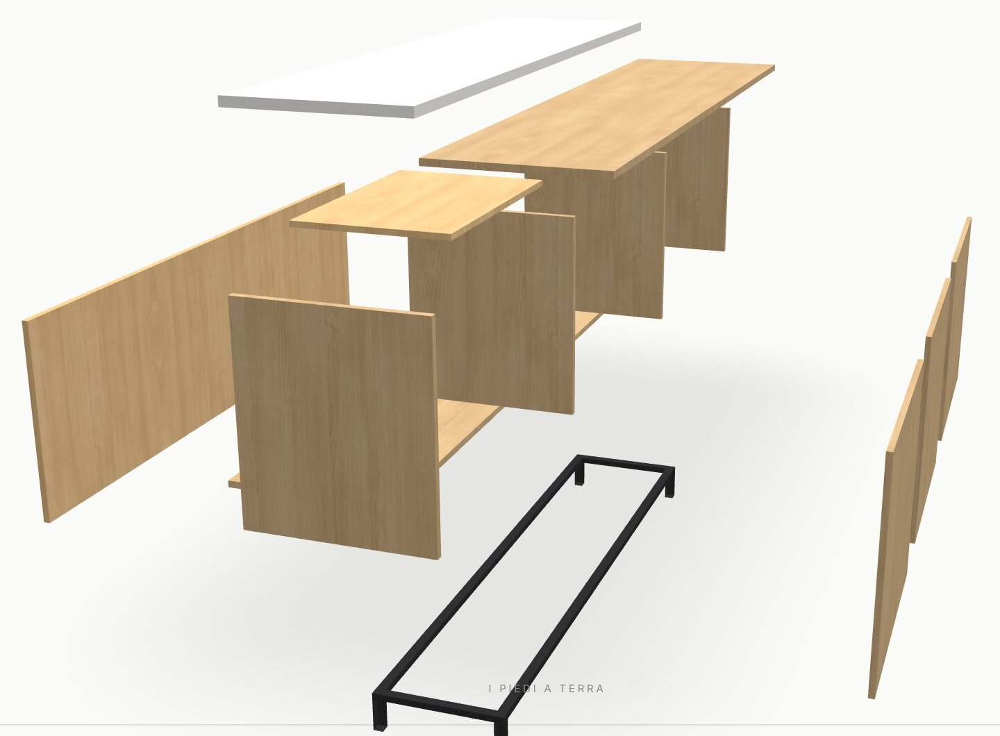
Il mobile nasce sulla parete vera, fuori piombo compreso
Fianchi, fondo, mensole, schiena, piano, ante e basamento, ognuno con il suo spessore
Nell’ordine del falegname: piedi, fondo, fianchi, mensole, schienale, piano, ante. Nessun pezzo entra nell’altro
Rovere, noce, salvia, antracite; piano in marmo o in legno
Mobile su misura · la scheda tecnico-esecutiva
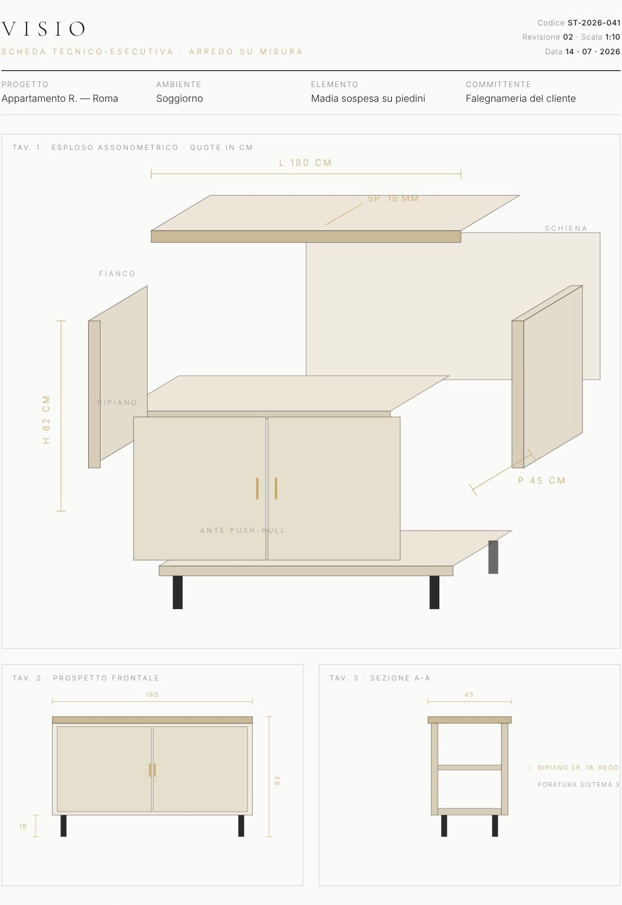
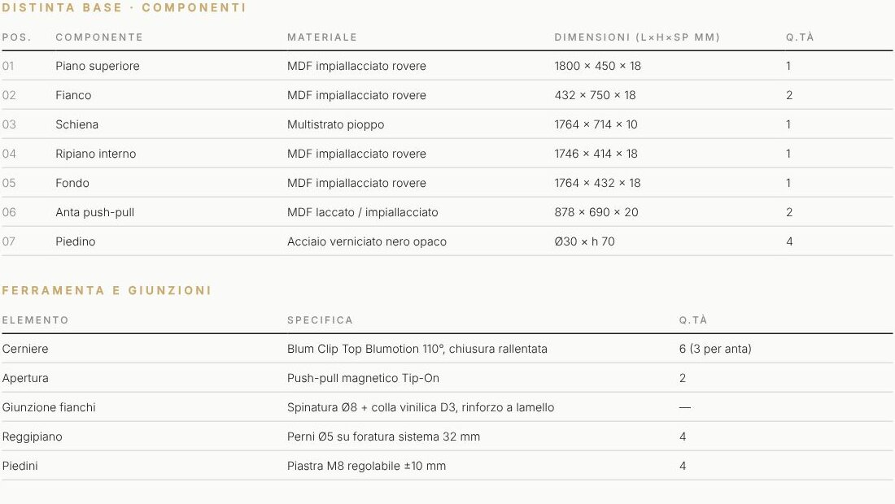
Esploso, prospetto e sezione quotati
Distinta: materiale e misure in mm di ogni pezzo
Ferramenta con marca e modello, giunzioni
Tolleranze, finiture e quote in opera dal rilievo
06 · Aree esterne
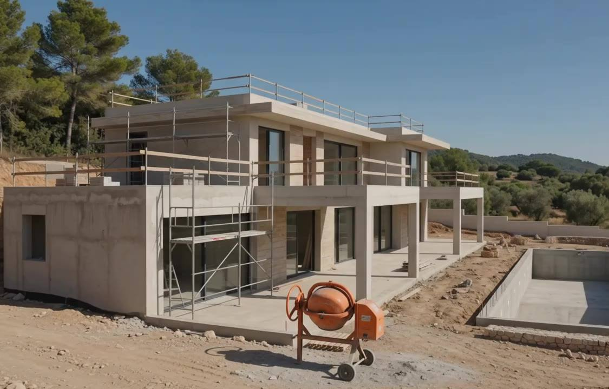
Il cantiere, oggi
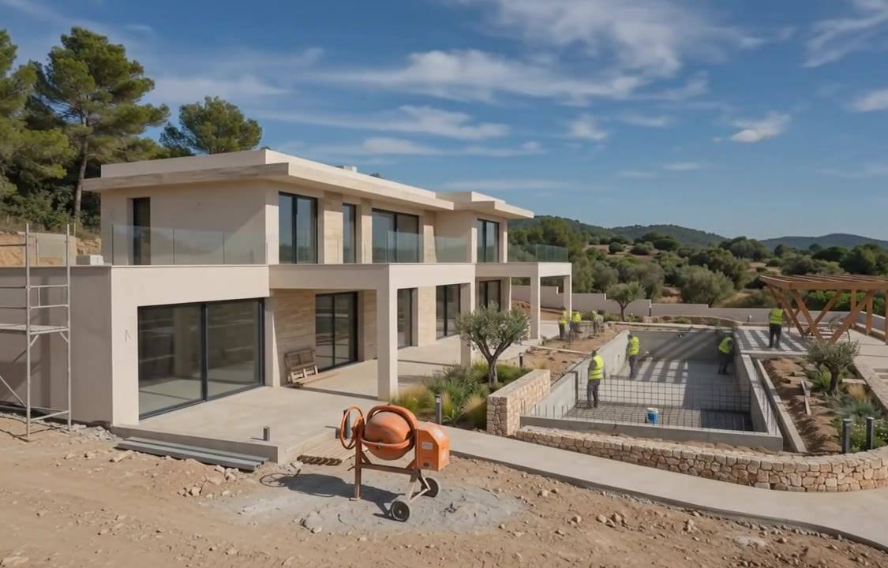
Il progetto prende forma
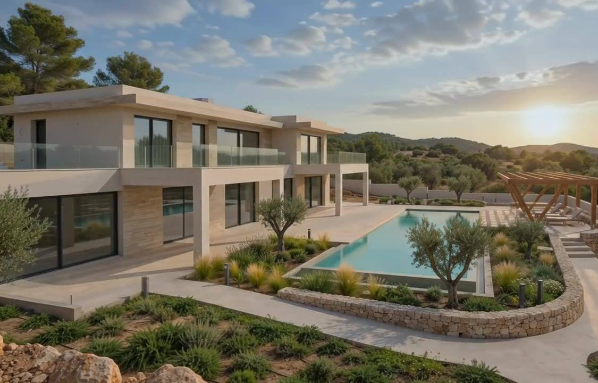
Il giardino finito, di giorno
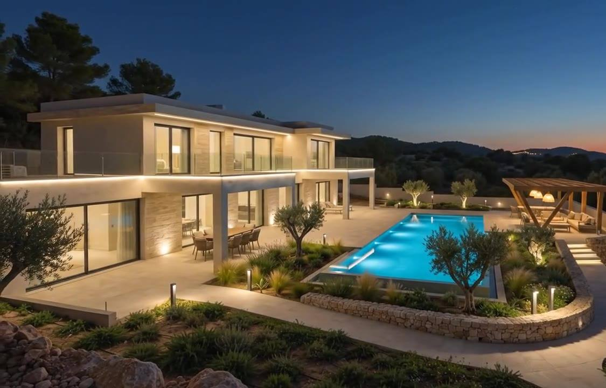
E di sera, con le luci
Confini, orientamento e pendenze
Percorsi, terrazze e recinzioni
Forma, rivestimenti e bordo vasca
Specie scelte per sole e stagioni
Segnapasso, incassi, faretti sugli alberi
Render di giorno, al tramonto, di sera
La progettazione dietro il 3D
Il render è la parte che si vede. Sotto c’è il lavoro che lo rende vero: la casa pensata stanza per stanza, con gli impianti, la luce e i mobili già risolti.
Misure, percorsi, luce
Ogni punto quotato
Scarichi, radiante, VMC
Il sole vero, ora per ora
Scenari, potenza, colore
Di serie o esecutivo
Disposizione degli spazi
Impianto elettrico
Idraulico, riscaldamento e clima
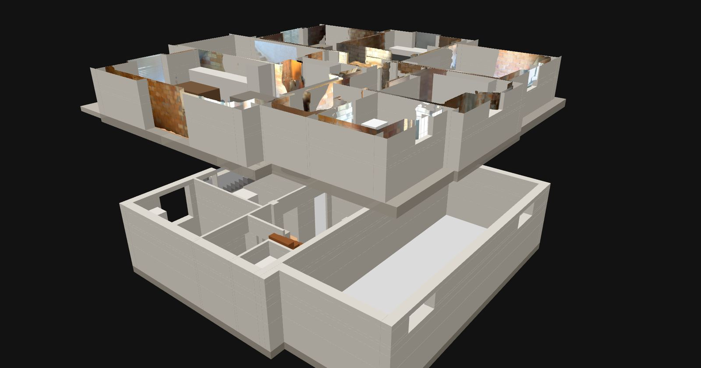
Luce naturale · studio del sole
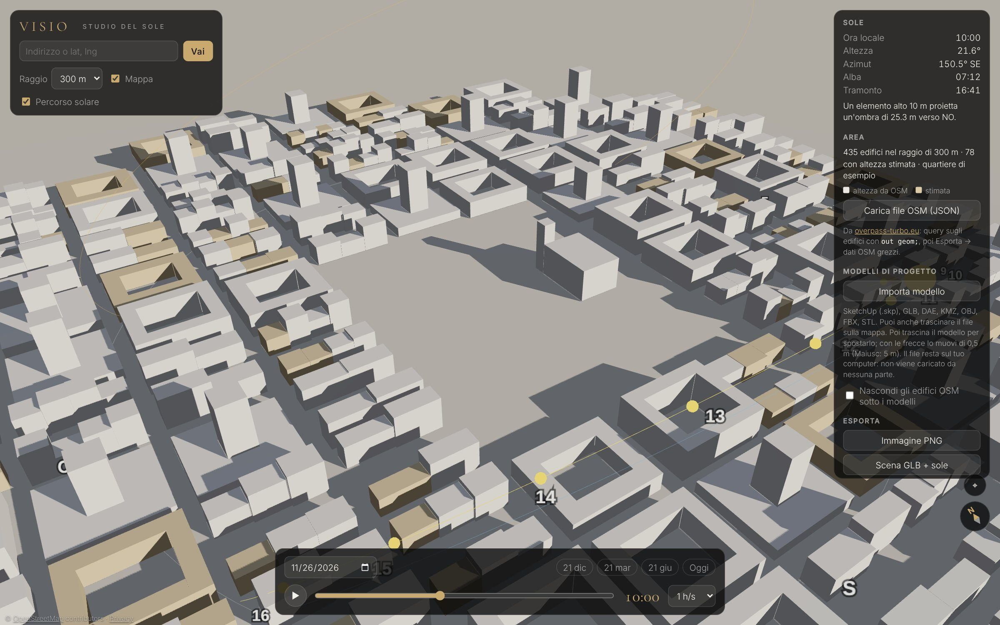
Gli edifici del quartiere, con le loro altezze
Percorso del sole e ombre, dal solstizio d’inverno a quello d’estate
Si importa il progetto e si vede chi fa ombra a chi
Dove posare i moduli, quali stanze prendono il sole
Luce artificiale · studio delle luci interne
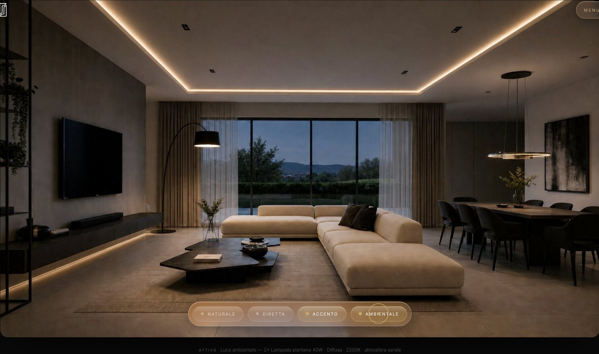
Naturale, diretta, d’accento, ambientale: si combinano come in casa
Ogni sorgente dice cos’è: per esempio 2 piantane da 40 W a 2200 K
Faretti, gole LED e sospensioni quotati nella pianta dei controsoffitti
Niente stanze buie o abbaglianti, niente lampade comprate due volte
Un solo modello coordinato
09 · Sito dedicato
Niente tavole sparse, cartelle di immagini o PDF. Si apre il sito della casa: piante e sezioni, render, tour a 360° e il dettaglio di ogni arredo.
Sul tavolo con gli ospiti come una presentazione, in tasca ovunque: solo il browser, nessuna app. Anche con area riservata e codice d’accesso.
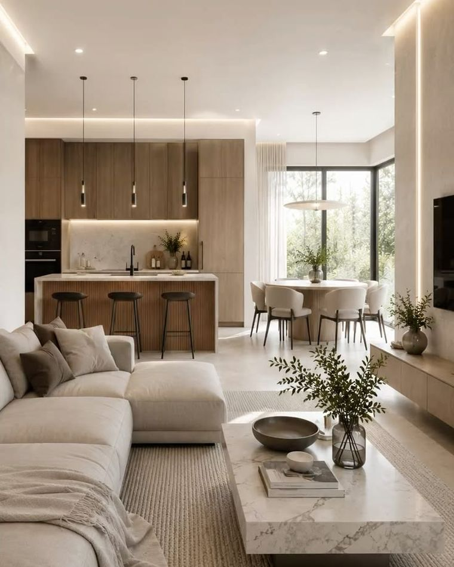
L’area riservata del cliente
Ogni cliente riceve una pagina privata che si aggiorna a ogni revisione. Si compone con i pezzi che servono a quel progetto.
Da girare, tagliare, guardare dall’alto
La scansione di oggi dentro il progetto
Stanza per stanza, attraverso le porte
Foto di oggi e render, con il cursore
Demolizioni e costruzioni, in PDF
Materiali reali, ogni scelta un render
I lavori fase per fase, allo scroll
Il progetto nella stanza vera
Si tolgono e aggiungono voci, il totale cambia
Offerte confrontabili voce per voce
Ogni impresa vede il suo strato
Due soluzioni affiancate, per decidere
Quattro aree consegnate
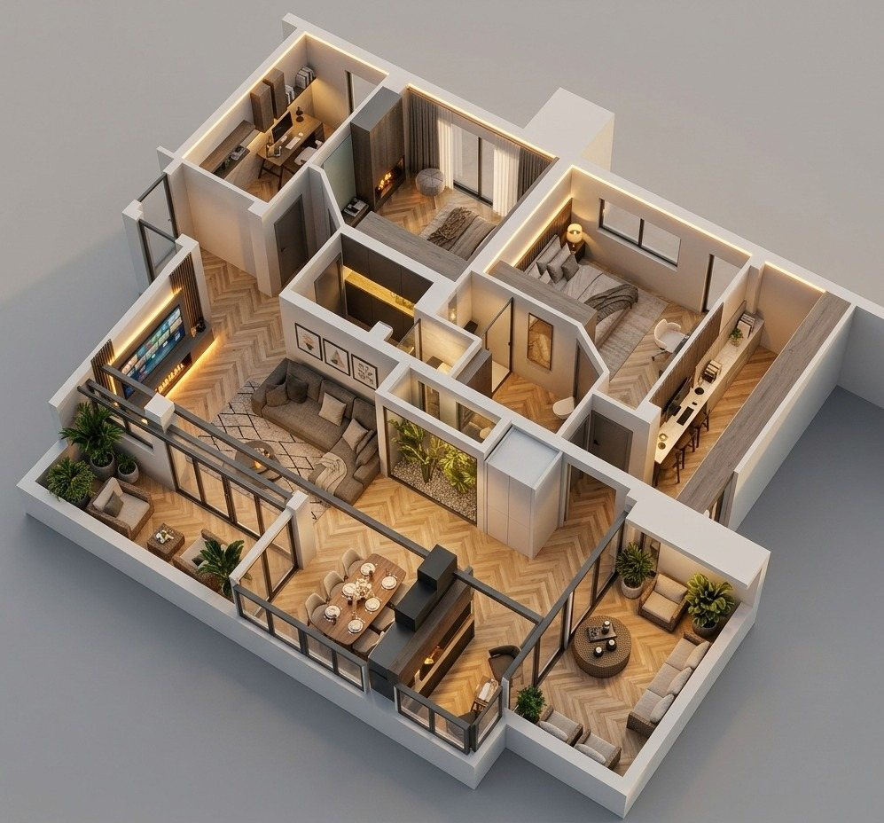
Il progetto definitivo in 3D con il rilievo Polycam sovrapposto, il tour stanza per stanza e «oggi e domani» a confronto.
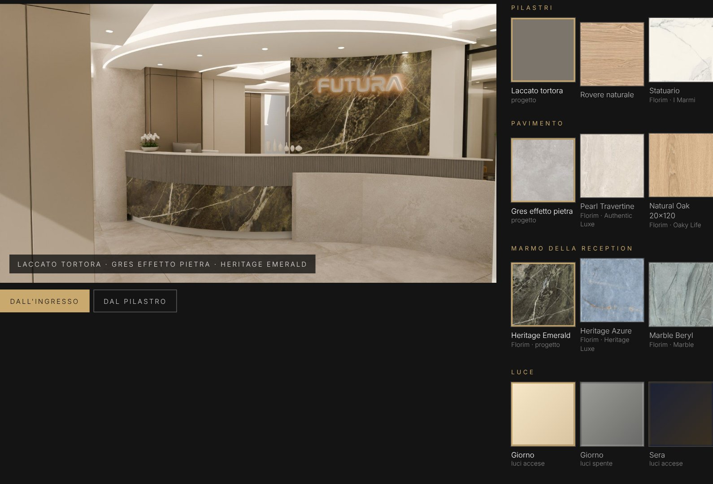
Cantiere 4D in 17 settimane, configuratore con ceramiche reali, reception in AR nel locale vuoto, capitolato.
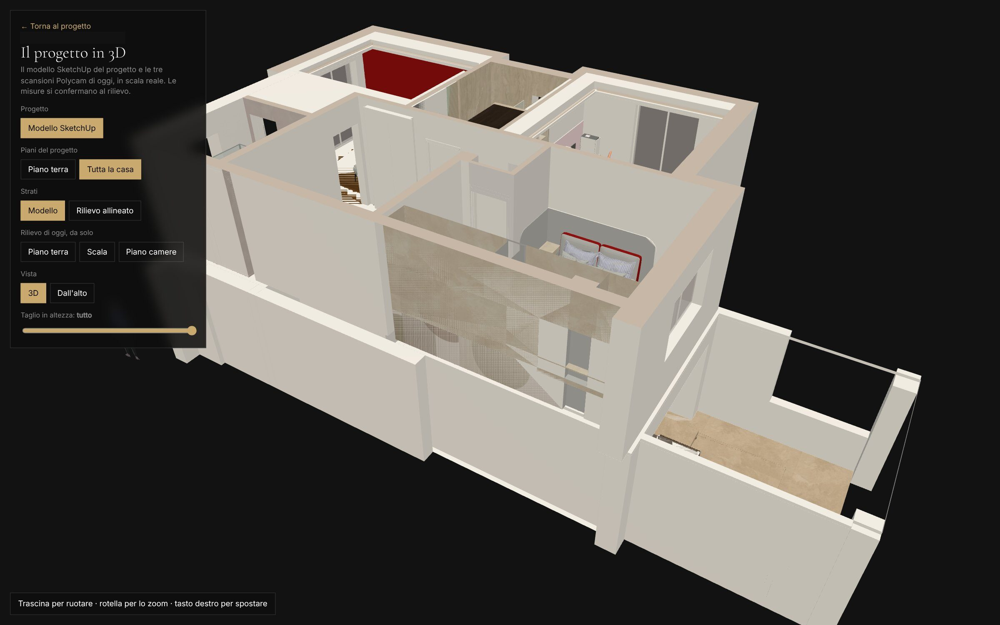
Rilievo e modello allineati, dieci panorami 360°, piante prima e dopo, preventivo da comporre e da sfogliare.
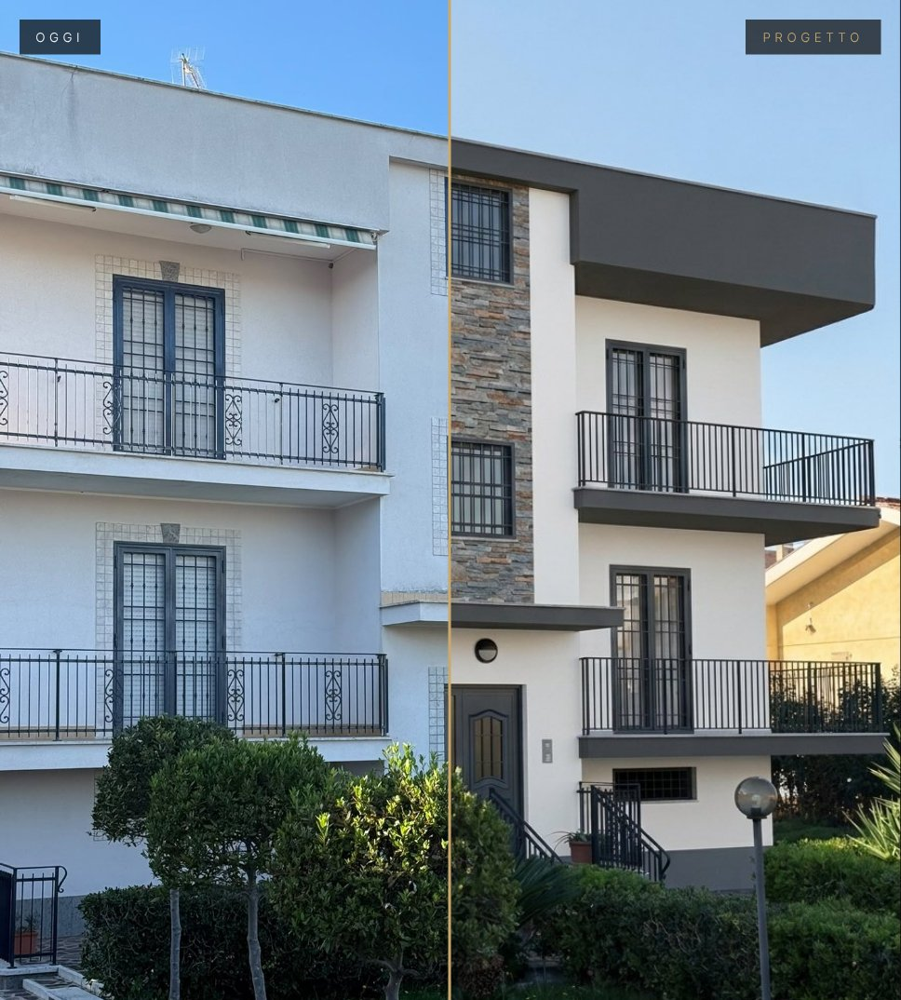
Prima e dopo della facciata, modello di cantiere per mestiere, computo per le imprese, variante dei bagni.
Scegliere vedendo
Pilastri, pavimento, marmo del bancone, luce del giorno o della sera: il cliente tocca un campione e la stanza cambia. Non un filtro, ma immagini calcolate dal modello 3D con i materiali del catalogo del fornitore.
È la risposta più chiara all’AI: qui il materiale ha un codice e un fornitore.
Come lavoriamo
01
Ascoltiamo il progetto e mandiamo un preventivo dettagliato entro 24 ore.
02
Scansione completa dell’ambiente con lo scanner laser.
03
Sulla scansione costruiamo il modello 3D con tutti i dettagli architettonici.
04
Condividiamo i render: fino a 3 giri di modifiche inclusi.
05
Render, modello 3D, piante, schemi e documentazione: tutti i file.
Preventivo indicativo in due minuti su visiorender.it/preventivo: chi invia la bozza ha il 10% di sconto.
Una domanda che ci fanno spesso
Cosa fanno davvero quei video, e cosa resta fuori.
Planimetria → AI → 3D
Riconosce muri, porte e finestre da una pianta e li alza in 3D. Arreda con oggetti di catalogo e restituisce in pochi minuti un’immagine plausibile. Per farsi una prima idea è utile e veloce.
Altezze, travi, spessori e fuori squadra, che una pianta non dice. Materiali, luce e arredi, scelti a caso o per somiglianza. E la pianta stessa: spesso è vecchia o non corrisponde a com’è la casa oggi.
Il risultato è una casa verosimile. Per decidere, spendere e costruire serve la tua casa, misurata.
Il confronto
| AI da planimetria | VISIO | |
|---|---|---|
| Punto di partenza | Pianta 2D: sbaglia e inventa le misure | Il rilievo LiDAR della casa com’è oggi |
| Misure e altezze | Indovinate: la pianta non le dice | Misurate: travi, fuori squadra, impianti |
| Disposizione | Ricalcata dal disegno o inventata | Progettata su percorsi, luce e impianti |
| Impianti | Assenti | Elettrico, idraulico e clima quotati |
| Materiali e arredi | Generici, che somigliano a mobili | Reali: di serie o su misura esecutivi |
| Fuori dalle finestre | Un paesaggio inventato | La vista vera, fotografata sul posto |
| Luce | Generica | Sole vero, scenari, potenza per ambiente |
| Modifiche | Si rigenera e cambia tutto | Revisioni mirate, 3 giri inclusi |
| Cosa ricevi | Immagini o un modello indicativo | Render, DWG, impianti, computo, tour |
| In cantiere | Non si usa | QR di cantiere e schede esecutive |
| Dopo la consegna | Finisce con l’immagine | Area riservata aggiornata fino al cantiere |
| Chi ne risponde | Nessuno | Uno studio, con nome e telefono |
Onestamente
vuoi farti un’idea veloce degli spazi, provare uno stile, fare un annuncio con un’atmosfera indicativa. Costa poco e va bene così.
devi decidere materiali e budget, ottenere preventivi confrontabili, far lavorare le imprese senza errori, vendere un immobile che ancora non esiste, o costruire un mobile su misura che deve entrare al millimetro.
Un errore di 5 cm in un’immagine non costa nulla. Lo stesso errore in cantiere sì.
In sintesi
Rilievo LiDAR, non una pianta da interpretare
Percorsi, luce e impianti decidono dove va ogni cosa
Elettrico, idraulico e clima quotati
Sole vero e luci da accendere prima di comprare
Di serie con codice, o su misura esecutivo
Render, tavole, computo e cantiere da un modello
QR per mestiere e note per ogni impresa
Dal rilievo al mobile, con l’area riservata
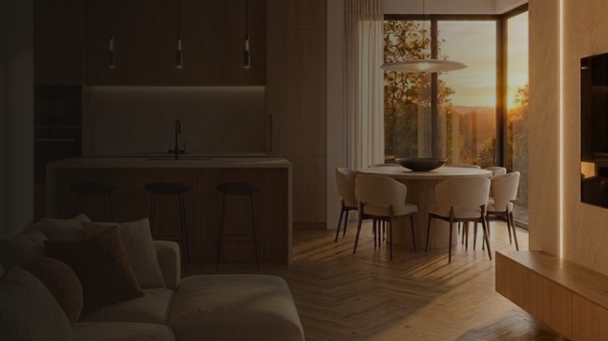
Iniziamo
Rispondiamo entro 24 ore con una proposta personalizzata e un preventivo senza impegno.
info@visiorender.it
+39 342 668 4232 · anche WhatsApp
visiorender.it
In foto: il soggiorno realizzato, uguale al render. Michelessi Corporation Srl · Aprilia (LT) · P.IVA 03294220599